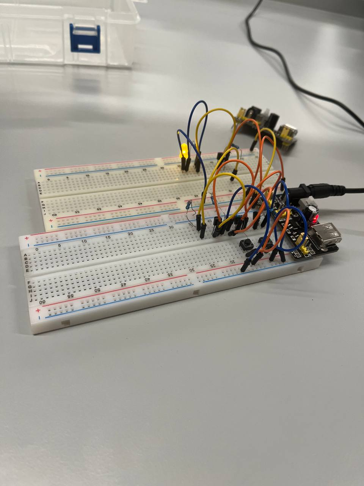
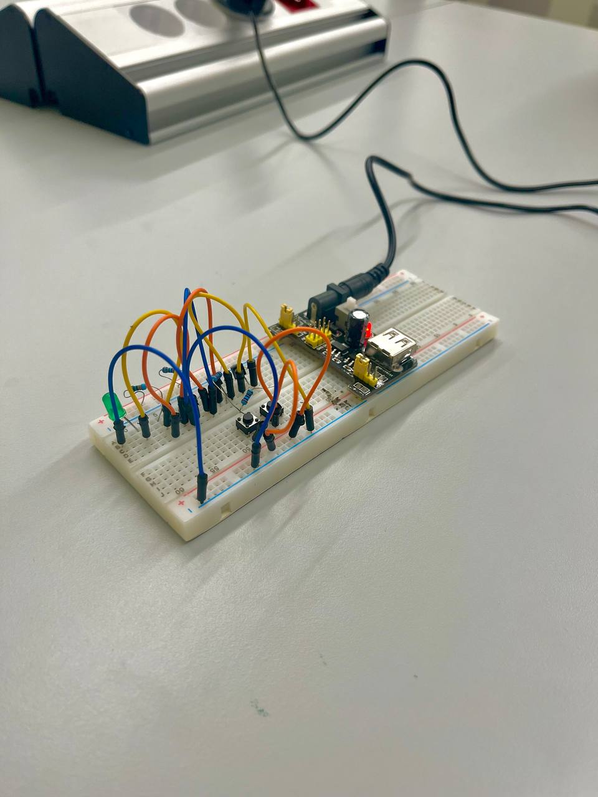

Team 55
Team 55
Logic gates are the building blocks of digital circuits. They are used to perform logical operations on binary numbers. In this project, we have built and tested some basic logic gates on a breadboard. As an example, the image on the left depicts the NOR gate, which is a combination of AND gate and NOT gate. With this gate, the output will always be 1 (ON), unless both of the inputs are 1, in that case the output will be 0 (OFF). The picture on the right represents the stand alone AND gate, that works in reverse to NOR gate.
 